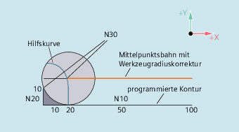
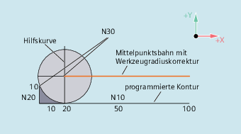

G461
Wenn kein Schnittpunkt des letzten WRK-Satzes mit einem Vorgängersatz möglich ist, wird die Offsetkurve dieses Satzes mit einem Kreis verlängert, dessen Mittelpunkt im Endpunkt des nicht korrigierten Satzes liegt, und dessen Radius gleich dem Werkzeugradius ist.
Die Steuerung versucht, diesen Kreis mit einem der Vorgängersätze zu schneiden.
Abfahrverhalten bei G461
Kollisionsüberwachung CDON, CDOF
Dabei wird bei aktivem CDOF (siehe Abschnitt Kollisionsüberwachung, CDON, CDOF) die Suche abgebrochen, wenn ein Schnittpunkt gefunden wurde, d. h. es wird nicht überprüft, ob auch noch Schnittpunkte mit weiter in der Vergangenheit liegenden Sätzen existieren.
Bei aktivem CDON wird auch dann, wenn bereits ein Schnittpunkt gefunden wurde, nach weiteren Schnittpunkten gesucht.
Ein so gefundener Schnittpunkt ist der neue Endpunkt eines Vorgängersatzes und der Startpunkt des Deaktivierungssatzes. Der eingefügte Kreis dient nur zur Schnittpunktberechnung und hat selbst keine Verfahrbewegung zur Folge.
| Hinweis |
Wird kein Schnittpunkt gefunden, wird der Alarm 10751 (Kollisionsgefahr) ausgegeben. |
G462
Wenn kein Schnittpunkt des letzten WRK-Satzes mit einem Vorgängersatz möglich ist, wird beim Abfahren mit G462 (Grundstellung) im Endpunkt des letzen Satzes mit Werkzeugradiuskorrektur eine Gerade eingefügt (der Satz wird durch seine Endtangente verlängert).
Die Schnittpunktsuche verläuft dann identisch zu der bei G461.
Abfahrverhalten bei G462 (siehe Beispiel)
Bei G462 wird die im Beispielprogramm von N10 und N20 gebildete Ecke nicht soweit ausgeräumt, wie es mit dem verwendeten Werkzeug möglich wäre. Dieses Verhalten kann aber dennoch notwendig sein, wenn die Teilekontur (abweichend von der programmierten Kontur) im Beispiel links von N20 auch bei größeren Werten von y als 10 mm nicht verletzt werden darf.
Eckenverhalten bei KONT
Ist KONT aktiv (Kontur im Start- oder Endpunkt umfahren), wird unterschieden, ob der Endpunkt vor oder hinter der Kontur liegt.
Endpunkt vor der Kontur
Liegt der Endpunkt vor der Kontur, ist das Abfahrverhalten gleich wie bei NORM. Diese Eigenschaft ändert sich auch nicht, wenn der letzte Kontursatz bei G451 mit einer Geraden oder einem Kreis verlängert wird. Zusätzliche Umfahrungsstrategien, um eine Konturverletzung in der Nähe des Konturendpunktes zu vermeiden, sind deshalb nicht notwendig.
Endpunkt hinter der Kontur
Liegt der Endpunkt hinter der Kontur, wird immer abhängig von G450/G451 ein Kreis bzw. eine Gerade eingefügt. G460 - G462 hat dann keine Bedeutung. Hat der letzte Verfahrsatz in dieser Situation keinen Schnittpunkt mit einem Vorgängersatz, kann sich nun ein Schnittpunkt mit dem eingefügten Konturelement oder mit dem Geradenstück vom Endpunkt des Umfahrungskreises zum programmierten Endpunkt ergeben.
Ist das eingefügte Konturelement ein Kreis (G450), und dieses bildet mit dem Vorgängersatz einen Schnittpunkt, ist dieser gleich dem Schnittpunkt, der sich auch bei NORM und G461 ergeben würde. Im allgemeinen bleibt jedoch ein zusätzliches Stück des Kreises zu verfahren. Für den linearen Teil des Abfahrsatzes ist keine Schnittpunktberechnung mehr notwendig.
Im zweiten Fall, wenn kein Schnittpunkt des eingefügten Konturelements mit den Vorgängersätzen gefunden wird, wird auf den Schnittpunkt zwischen der Abfahrgeraden und einem Vorgängersatz verfahren.
Es kann sich somit bei aktivem G461 bzw. G462 nur dann ein gegenüber G460 verändertes Verhalten ergeben, wenn entweder NORM aktiv ist, oder das Verhalten bei KONT geometrisch bedingt identisch zu dem bei NORM ist.